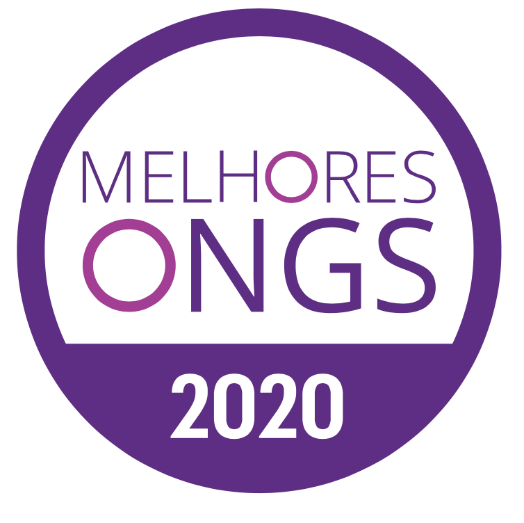
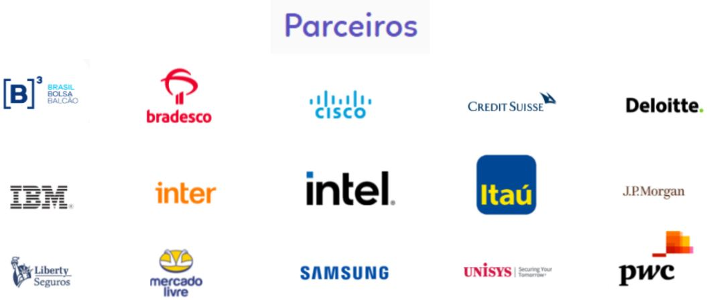

CEAP é uma organização não governamental, sem fins lucrativos que se preocupa com a Formação Humana dos
mais de 7.500 jovens em situação de alta vulnerabilidade social.
Selos de excelência


Como Voluntário da CEAP você ajuda na formação de jovens como:
- Mentor:
A função básica do Mentor é orientar a vida pessoal e/ou profissional
– seja em um novo projeto, processo de sucessão, tomada de decisões ou
crescimento na corporação. É o Mentor que ajuda o mentorado a perceber
coisas na carreira que o último não enxergaria sozinho.
- Palestrante:
Ser palestrante é resolver problemas e ajudar pessoas a fazerem o mesmo.
Em outras palavras, um palestrante vai além da simples oratória. É um indivíduo
que se comunica e faz uso disso não só sobre um palco, mas em diversos contextos,
como reuniões, conversas e vendas.
- Visita Guiada:
Uma visita guiada tem a intenção de apresentar e situar o estudante dentro de
um espaço específico que pode ser, entre outras opções, uma cidade, um museu,
uma escola, uma biblioteca, uma universidade, um centro cultural ou científico,
um parque.
Tudo ao seu alcance!
